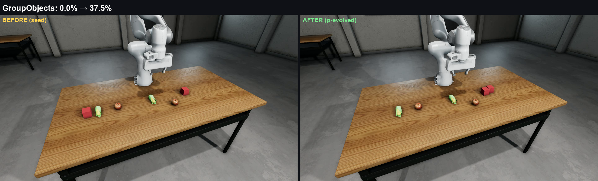
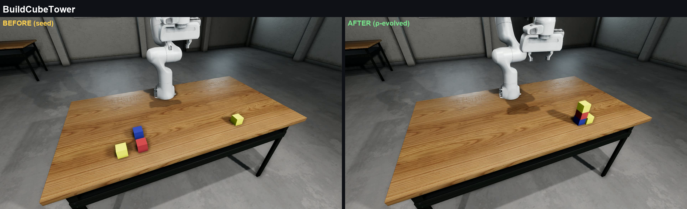
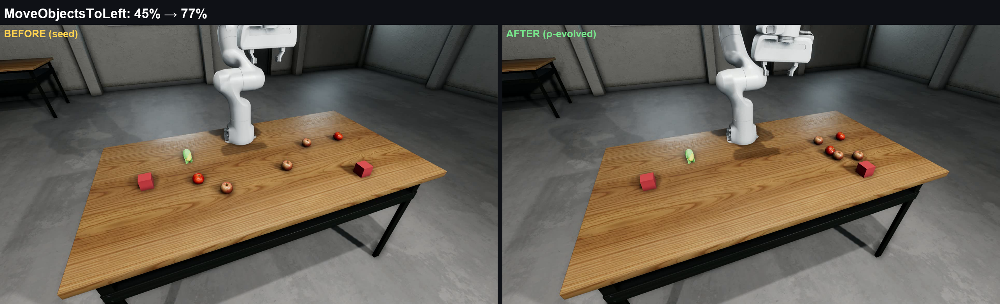
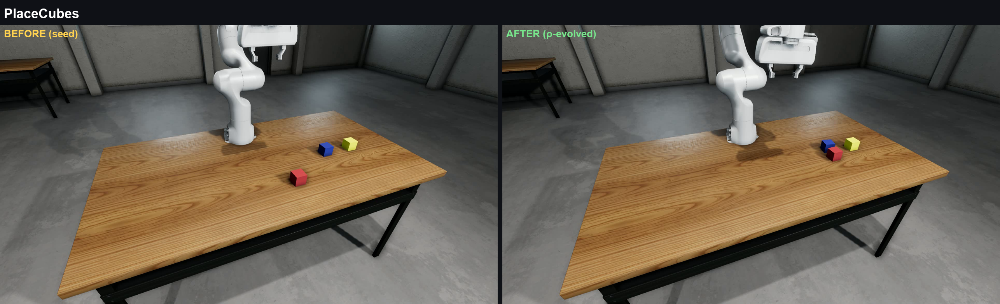
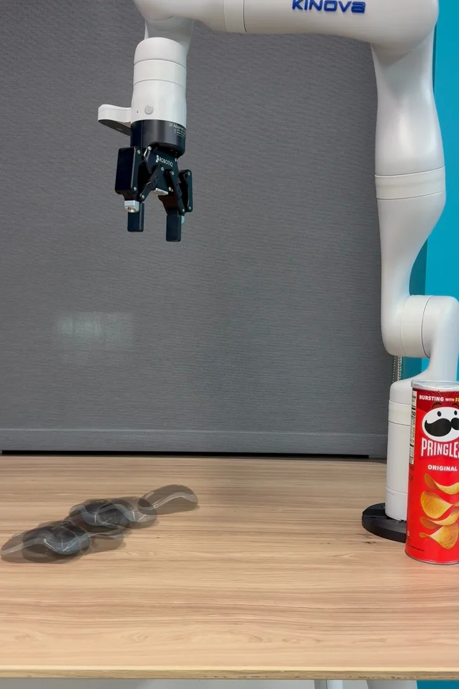

1 UC Berkeley · 2 Embodied Science · 3 AMD · 4 Technical University of Munich
RHO (Robotics Harness Optimization) unlocks tool-enabled LLM coding agents to unleash their inner roboticist. Through reflective evolutionary search, it writes and rewrites a robot's control code in simulation until the code itself solves the task, reaching state of the art among Code-as-Policies methods.
Past research
Recent CaP systems rely on iterative code generation loops at test time, often leaving them unsuitable for real-time robotics tasks.
The idea
RHO hands the job to a tool-enabled coding agent and lets it practice in a simulator through reflective evolutionary search: it edits, runs, and debugs whole programs against a scalar reward, keeping the variants that help. The end product is one self-contained multi-file code repository. Because the final product is just code, you can read it, debug it, and reuse it. (For experts: this relocates the model's expensive search out of deployment and into a one-time training phase, so on primitive-only benchmarks we chose to ship fixed Repositories-as-Policies, or RaPs.)
RHO system overview
Search loop · one generation
A candidate repository runs training trials in the simulator through the benchmark's host services. It earns a reward plus execution traces and judge scores on what went wrong.
Runtime stack
Unlike prior reflective optimization methods, which optimize only a single prompt, function, or delimited code region, RHO's optimizer, HELIX, searches over entire multi-file repositories at once. RHO points it at any robot-policy repository, whether Python policies, LLM agent harnesses, or skill graphs, with live robot-environment access (REaaS) isolated from the evaluator.
CaP-Bench Robosuite · same perception and motion primitives
CaP-Agent0 calls language models while the robot runs: up to 6 turns of 11 LLM/VLM calls each, 113.6 s per trial. RHO calls them only during a one-time search; on CaP-Bench we deploy the searched repository as fixed code: 0 code-generation calls, 9.31 s per trial.
up to 6 turns × 11 LLM/VLM calls = up to 66 calls
infer(env) → action
robot
0 LLM code-generation calls in the control loop
99.00%: GPT-6.1 Sol mutator, best of two searches, on evaluation seeds never seen in search. Trial times are means over 20 cube-stacking trials; the RHO time uses the GPT-5.5 repository (70.00% success). The 66 calls are the maximum (all 6 turns) and are spaced evenly for illustration.
| System | Model calls per trial | Mean trial time (cube stacking, N=20) | Robosuite success |
|---|---|---|---|
| CaP-Agent0, multi-turn | up to 66 LLM/VLM calls (6 turns × 11) | 113.6 s | 68.29% |
| CaP-Agent0, single-turn | up to 11 LLM/VLM calls | 28.4 s | 24% |
| RHO, single-turn | 0 code-generation calls | 9.31 s (GPT-5.5 RaP) | 99.00% (GPT-6.1 Sol) · 70.00% (GPT-5.5) |
30.00% 70.00%
With GPT-5.5, a single tool-enabled mutation with unlimited internal turns reaches 30.00% on Robosuite. RHO's repeated reflective search lifts the same model and tools to 70.00%. The search loop, not just the agent, does the work.
The proof
One single-turn execution of the GPT-5.5 repository: no visual-difference model and no LLM code-generation calls.
Per-task success (%) over 100 evaluation trials per task. Both RHO columns deploy the selected repository as fixed, single-turn code; CaP-Agent0 corrects its code over up to 6 turns. The GPT-6.1 Sol column is the better of two searches (the other reached 96.14%, 673/700); both train on seeds 101–125 and evaluate on seeds 1–100. This search reached 99.00% by generation 17, after 16.5 hours and $20.50 of mutator tokens. The rollouts above come from the GPT-5.5 repository.
| Task | RHO GPT-6.1 Sol single-turn, best search | RHO GPT-5.5 single-turn | CaP-Agent0 multi-turn |
|---|---|---|---|
| Cube lifting | 100 | 98 | 97 |
| Cube stacking | 99 | 98 | 98 |
| Cube restacking | 98 | 54 | 89 |
| Nut assembly | 97 | 1 | 0 |
| Spill wiping | 100 | 100 | 100 |
| Two-arm lift | 100 | 53 | 74 |
| Two-arm handover | 99 | 86 | 20 |
| Overall | 99.00 | 70.00 | 68.29 |
This contrast is scoped to LIBERO-PRO (perturbed): task-level and position perturbations that test generalization beyond the standard LIBERO training distribution.
On standard LIBERO, OpenVLA and π0.5 score 93.0% and 96.9%; under LIBERO-PRO's perturbations OpenVLA scores 0.00% and π0.5 scores 13.20%.
RHO search · CaP-Bench Robosuite · GPT-5.5 mutator
Keyboard: Tab to a point, ←/→ to scan generations, Home/End to jump, Esc to dismiss.
| candidate | generation | mean reward | best-by-validation | note |
|---|
7 Robosuite tasks · 87 accepted candidates · the deployed solver is selected by validation at generation 134. These curves are best-by-train running maxima of mean shaped reward on the 10 training trial IDs, distinct from the held-out per-task success counts: five tasks reach training reward 1.00, two-arm lift plateaus near 0.73, and nut assembly stays near 0.06.
Lines are best-by-train running maxima, so each curve is non-decreasing. Hover, focus, or tap a line for the exact value. Keyboard: Tab to a line to hear its task and final reward; use the legend buttons to toggle lines. A full data table is below.
Here the deployment is multi-turn: a language-model agent keeps running while the robot works. Rather than write standalone code, RHO optimizes the agent's harness: its system prompt and the bodies of its tools (the agent's control interface). GPT-5.1 runs inside the harness; GPT-5.5 is the mutator. On the hard held-out split, success nearly doubles from 23.45% to 44.27% (p < 0.001, 3-run average), while using 27% fewer tool calls and 20% less wall-clock time (single representative run; the sign holds under the 3-run average).




Graph-as-Policy (GaP) runs a policy as a directed graph of human-written skills. Starting from the 20-node grocery-packing graph in the GaP codebase (LIBERO, simulated Franka, 11 instructions), we ran two RHO searches of 50 generations each with a GPT-5.6 Terra mutator. Compose-Only may add nodes and rewire the graph but must use the skills as given; Compose-and-Edit may also rewrite the skills. Both searches learned to read the instruction: grasps per single-item task fall from 4.17 to 1.04.
| Graph | Success 100 trials | Cycle time | Successes / hr | vs. starting graph |
|---|---|---|---|---|
| Starting graph | 67/100 | 144.94 ± 95.94 s | 16.64 | 1.00× |
| RHO, Compose-and-Edit | 97/100 | 68.03 ± 15.12 s | 51.33 | 3.08× |
| RHO, Compose-Only | 96/100 | 39.44 ± 19.94 s | 87.63 | 5.27× |
Throughput is successes per hour, following the GaP paper. All three graphs end a trial with the simulator's success check; Compose-Only calls it earlier. A real robot has no such oracle; without it, Compose-Only would be about 2.8× the starting graph. Search cost: $14.39 (Compose-Only) and $22.83 (Compose-and-Edit). Full setup and analysis →
On Robosuite, mutating a full multi-file repository wins in fewer generations (200 vs 250), and far outperforms rigid structured representations (behavior trees and finite-state machines).
Only the top two bars share the same backend (Codex GPT-5.5). The behavior-tree baseline used Claude Sonnet 4.6 and the finite-state-machine baseline used Qwen3.6-27B, so the gap to those two bars reflects model capability as well as representation, not a pure structure-only comparison.
Two GPT-6.1 Sol coding-agent sessions start from the same six-file scaffold with no task policies, the same robot API documentation, and feedback from the same 12 training trials across three task families. The only difference: one can run candidates against the live simulator (REaaS) before submitting. Each resulting repository is evaluated once on all seven Robosuite tasks over seeds 1–100 (700 trials), single-turn.
With the same GPT-6.1 Sol mutator, RHO's search closes the remaining gap: repeated sessions, the acceptance gate, and the Pareto frontier take one session's 73.00% to 99.00% (best of two searches) on the same 700 trials. The searches also trained on more trials (seeds 101–125) than the single sessions' 12. In the no-access evaluation, 34 trials ended in native simulator crashes; we replayed exactly those trials with the same policy, seeds, and evaluator and report their outcomes (13 successes).
Hardware
We deployed the GPT-5.5 repository evolved in Robosuite without changing its policy code. Only the perception and motion APIs are swapped for embodiment-specific implementations with the same interfaces.
On the Kinova, three things change from simulation: the search used cubes, and this is a computer mouse; the mouse moves between trials and, in this trial, during execution; and the search used a simulated Franka.

Recovery strategies learned in simulation cover the failures seen in simulation. On real robots, perception degrades under different cameras and lighting, so real-world success can vary even when the program logic executes correctly: the Kinova lifts an unseen mouse in 17 of 20 trials, while the nominally simpler Franka cube lift succeeds in 14 of 20.
Per-task tradeoffs remain in simulation. The GPT-5.5 repository, used for the timing and hardware results, trails CaP-Agent0 on cube restacking (54% vs 89%) and two-arm lift (53% vs 74%).
Run it yourself
Karim Elmaaroufi, Sarunas Kalade, Yansong Wu, Justin Svegliato, Graham Schelle, Negar Mehr, Sanjit A. Seshia, and Matei Zaharia. "RHO: Your Coding Agent is Secretly a Roboticist." arXiv:2606.16458, 2026.
@misc{elmaaroufi2026rho,
title = {{$\rho$}: Your Coding Agent is Secretly a Roboticist},
author = {Elmaaroufi, Karim and Kalade, Sarunas and Wu, Yansong and Svegliato, Justin and Schelle, Graham and Mehr, Negar and Seshia, Sanjit A. and Zaharia, Matei},
year = {2026},
howpublished = {arXiv preprint},
eprint = {2606.16458},
archivePrefix = {arXiv},
primaryClass = {cs.RO},
url = {https://arxiv.org/abs/2606.16458},
note = {Robotics Harness Optimization (RHO)}
}